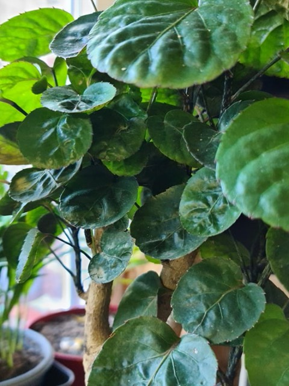
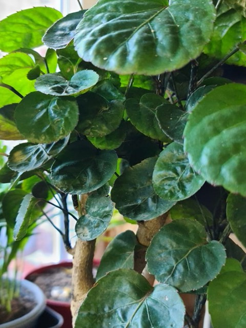
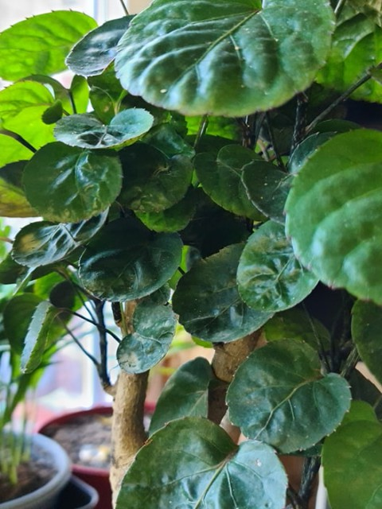

| Nom et photo | Exposition | Arrosage | Rempotage | Saisons |
|---|---|---|---|---|
| Polyscias 'fabian' |
Lumineuse sans soleil direct. Soleil d'hiver sans danger. | Généreux pour maintenir le substrat humide sans tremper dans l'eau. Aime les vaporisations régulières lorsqu'il fait chaud. À besoin d'une bonne humidité ambiante. Adapter en hiver. | Terreau normal plantes d'intérieur éventuellement mélangé avec de la tourbe ou fibre de coco. Pot en plastique de taille moyenne. | Été: Intérieur et extérieur. Hiver: Intérieur ambiante. Pas dans une pièce fraîche. |

| Nom et photo | Exposition | Arrosage | Rempotage | Saisons | Polyscias hawaiiana ming |
Lumineuse sans soleil direct. Soleil d'hiver sans danger. | Généreux pour maintenir le substrat humide sans tremper dans l'eau. Aime les vaporisations régulières lorsqu'il fait chaud. À besoin d'une bonne humidité ambiante. Adapter en hiver. | Terreau normal plantes d'intérieur éventuellement mélangé avec de la tourbe ou fibre de coco. Pot en plastique de taille moyenne. | Été: Intérieur et extérieur. Hiver: Intérieur ambiante. Pas dans une pièce fraîche. |
|---|